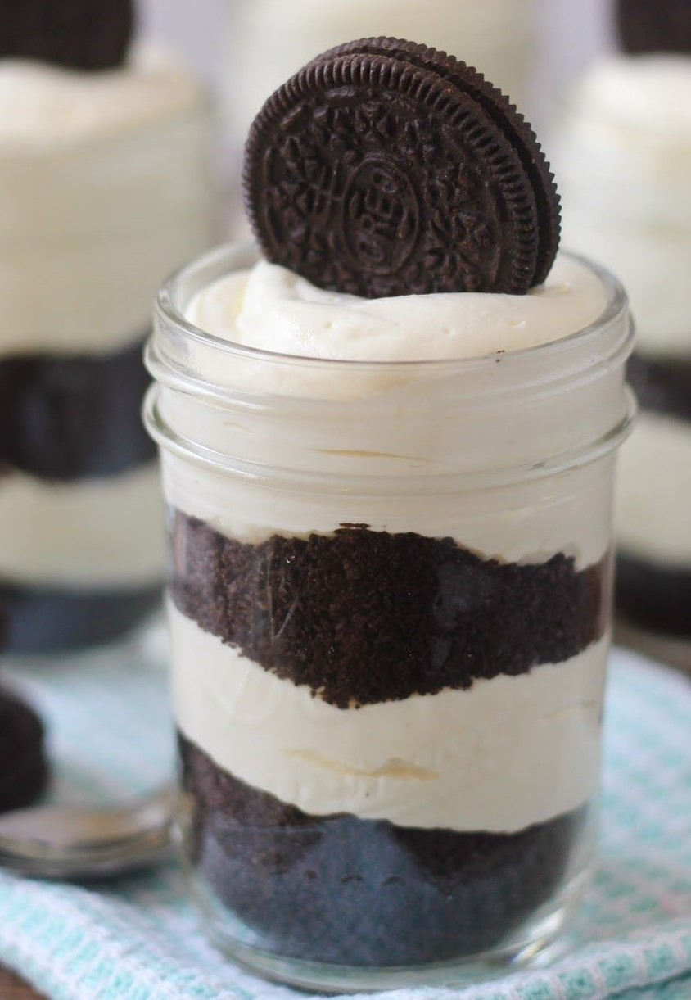
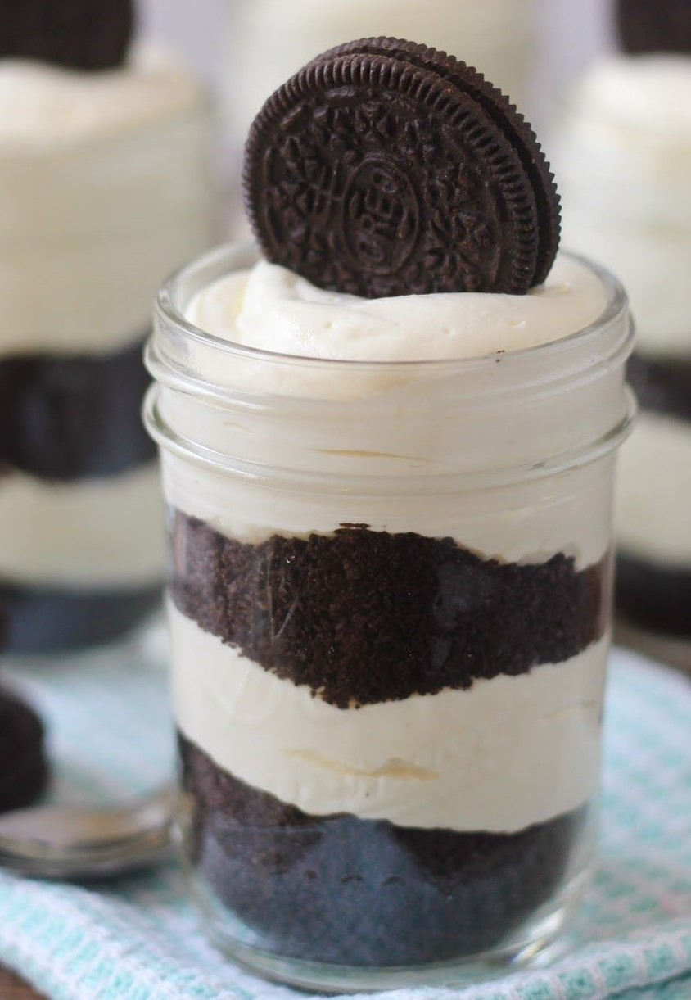

| Productos | Descripcion | Precios |
|---|---|---|
| Chocotorta |
Torta con capas de galletitas de chocolate mojadas en leche chocolatada con una exquisita crema de dulce de leche y queso crema. Un postre ideal para cualquier ocasión. | $ 350 |
| Cabsha | Ideal para todos los fanáticos del dulce de leche y del chocolate!Una fina masa de oblea con dulce de leche con un toque de alcohol y baño de chocolate. | $ 350 |
| Alfajorcitos de Crema | Alfajor con tapas de bizcochuelo y rellenos de crema chantilly | $ 350 |
| Lemonpie |
Es una tarta de limón, hecho con una corteza de masa quebrada, relleno de crema de limón y un esponjoso merengue en la parte superior. | $ 350 |
| Red velvet |
Consistente en un bizcocho de color rojo en capas relleno con crema y con un glaseado de crema de queso. | $ 350 |
| Selva Negra |
Se trata de una tarta en capas que se consta de bizcocho genovés de chocolate embebido en almíbar con Kirsch, relleno y recubierto de crema chantillí y cerezas maceradas en kirsch o guindas y decorado con virutas de chocolate y cerezas. | $ 350 |
| Torta Oreo  |
Torta en presentacion vaso con capas intercaladas de crema y las mismas galletitas hechas masa, con la decoracion final de una oreo | $ 350 |
| Medias Lunas | Un panificado dulce elaborado para comer en el desayuno o la merienda, también llamado croissant. | $ 400 Docena |